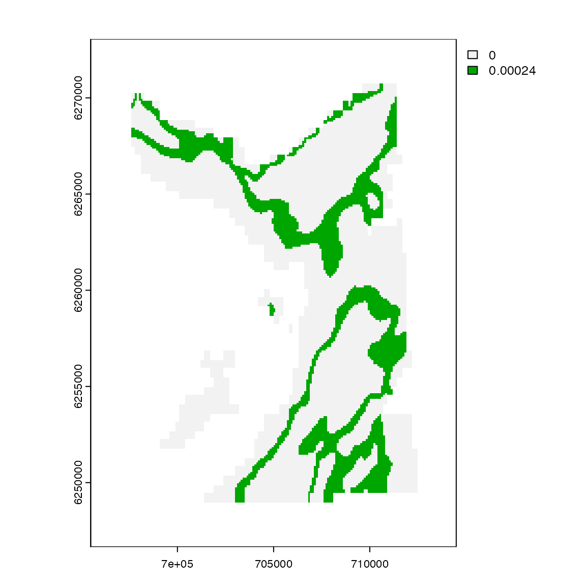
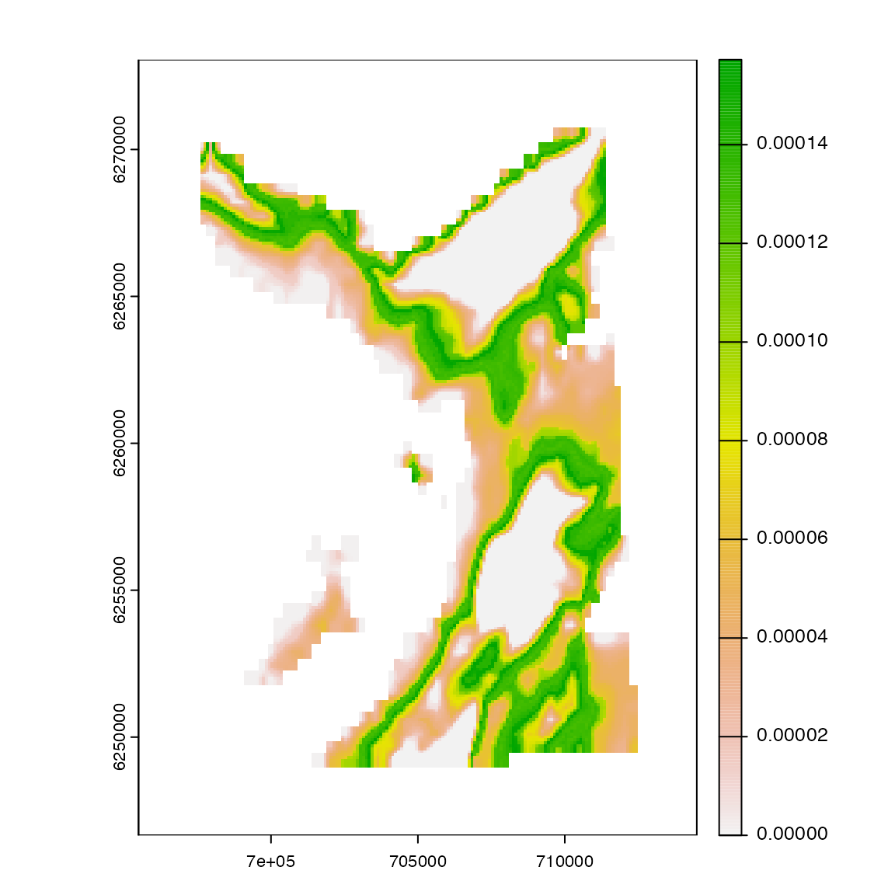
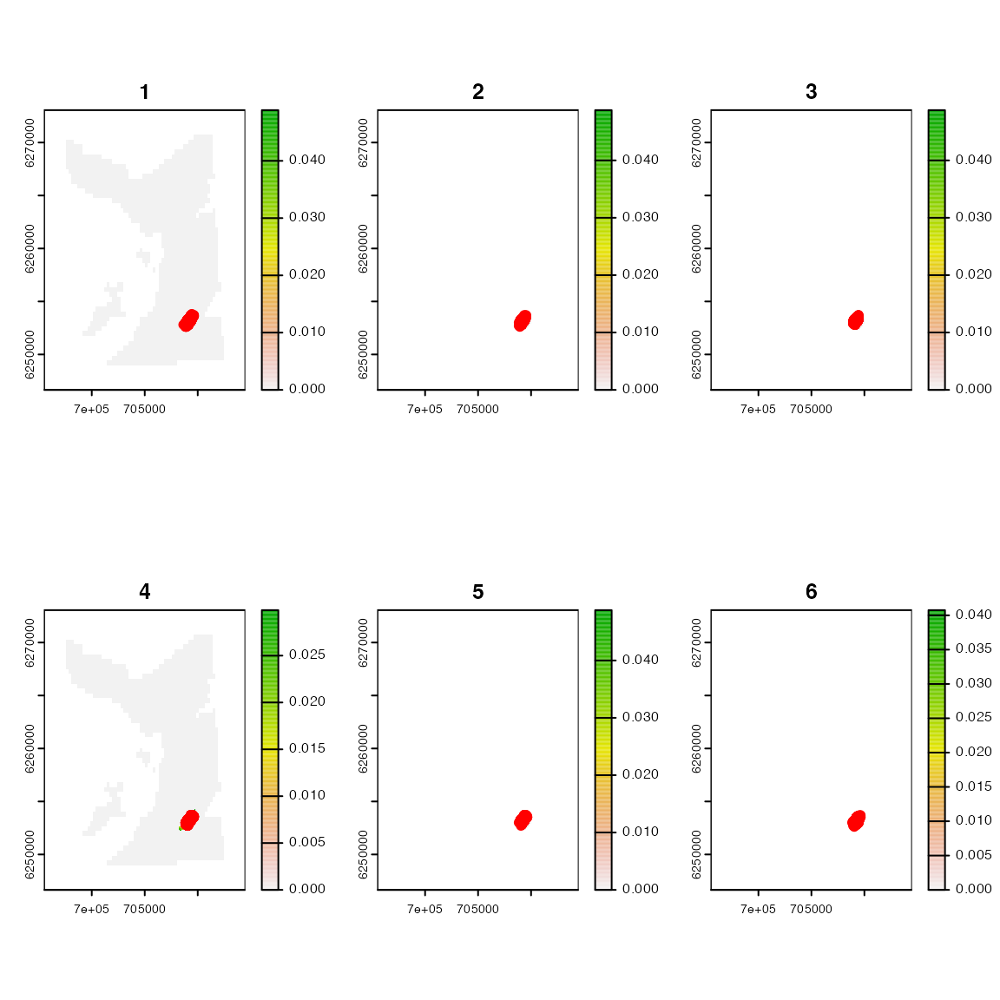
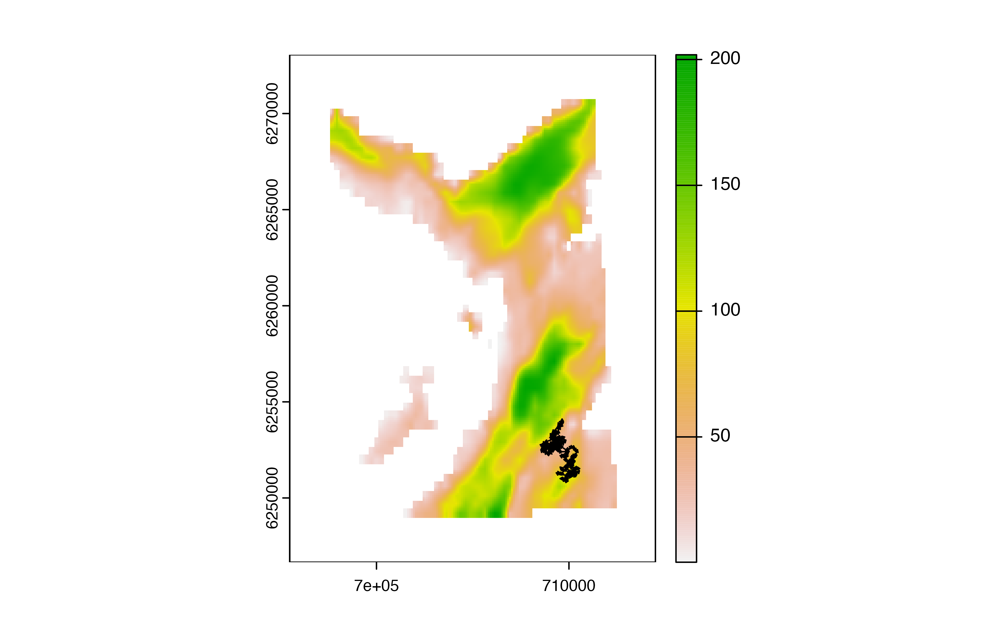
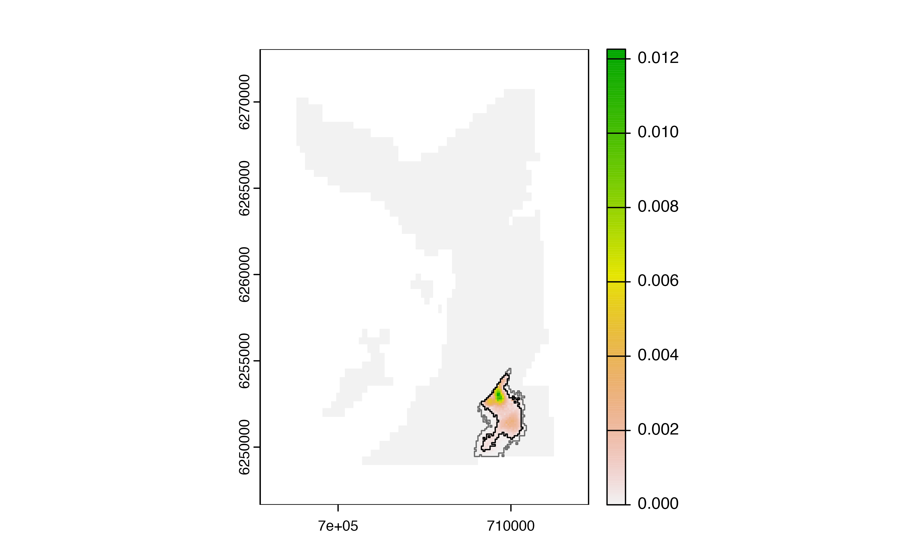

Introduction
The patter package is a re-implementation of the
‘flapper’ algorithms for passive acoustic telemetry (Lavender et al.,
2023). These algorithms reconstruct movement paths and emergent patterns
of space use from detections at receivers (and ancillary datasets) in
passive acoustic telemetry systems (Lavender et al., 2023). This
introductory vignette outlines the basic workflow for their
implementation via patter. Its purpose is simply to
illustrate how functions fit together. For full details and additional
functionality, see the package/function documentation.
 Figure 1. The
workflow for
Figure 1. The
workflow for patter. This comprises four main
steps: data preparation, forward filtering, backward sampling and
analysis. In data preparation, we prepare the data for analysis and
pre-compute necessary algorithm inputs. In forward filtering, we
simulate possible locations of an individual, given the data and a
movement model, moving forwards in time. This step involves the
implementation of an AC-branch algorithm, that defines the set of
possible locations of an individual given the data, and a PF-branch
algorithm, that refines the set of possible locations given a movement
model. In backwards sampling, we further refine the set of simulated
locations. We can then analyse reconstructed movement paths and patterns
of space use.
Preparation
Step 1 is to prepare the data and algorithm inputs. In this vignette,
we use a small sample of acoustic and archival (depth) time series from
flapper skate (Dipturus intermedius) to reconstruct movement
paths and patterns of space use over a low-resolution grid. See the
sim_*() functions to simulate data instead.
# Set seed
set.seed(1)
# Define the bathymetry grid over the study area
gebco <- dat_gebco()
# Define passive acoustic telemetry receiver locations
moorings <- dat_moorings
head(moorings)
#> receiver_id receiver_start receiver_end receiver_easting receiver_northing
#> 1: 3 2016-03-03 2016-11-02 706472.2 6254001
#> 2: 4 2016-03-03 2017-03-08 709757.8 6267727
#> 3: 7 2016-03-03 2016-11-26 708776.6 6269137
#> 4: 9 2016-03-03 2016-10-13 706039.9 6254330
#> 5: 11 2016-03-03 2016-11-18 707542.3 6267727
#> 6: 12 2016-03-03 2017-03-08 710076.1 6267321
#> receiver_lat receiver_lon receiver_range
#> 1: 56.38545 -5.655350 750
#> 2: 56.50710 -5.591217 750
#> 3: 56.52018 -5.606000 750
#> 4: 56.38858 -5.662083 750
#> 5: 56.50808 -5.627150 750
#> 6: 56.50332 -5.586383 750
# Define a sample of acoustic time series
acoustics <-
dat_acoustics |>
filter(individual_id == 25) |>
slice(1:100) |>
as.data.table()
head(acoustics)
#> individual_id timestamp receiver_id
#> 1: 25 2016-03-17 01:50:00 26
#> 2: 25 2016-03-17 01:52:00 26
#> 3: 25 2016-03-17 01:54:00 26
#> 4: 25 2016-03-17 01:58:00 26
#> 5: 25 2016-03-17 02:00:00 26
#> 6: 25 2016-03-17 02:04:00 26
# (optional) Define accompanying depth time series
archival <-
dat_archival |>
filter(individual_id == acoustics$individual_id[1]) |>
filter(timestamp >= min(acoustics$timestamp) &
timestamp <= max(acoustics$timestamp)) |>
as.data.table()
head(archival)
#> individual_id timestamp depth
#> 1: 25 2016-03-17 01:50:00 73.78
#> 2: 25 2016-03-17 01:52:00 73.32
#> 3: 25 2016-03-17 01:54:00 73.32
#> 4: 25 2016-03-17 01:56:00 73.32
#> 5: 25 2016-03-17 01:58:00 73.55
#> 6: 25 2016-03-17 02:00:00 68.70We prepare the data for the algorithms via
acs_setup_obs().
obs <- acs_setup_obs(acoustics, archival,
.step = "2 mins",
.mobility = 500,
.detection_range = moorings$receiver_range[1])
head(obs)
#> timestep timestamp date detection_id detection receiver_id
#> 1: 1 2016-03-17 01:50:00 2016-03-17 1 1 26
#> 2: 2 2016-03-17 01:52:00 2016-03-17 2 1 26
#> 3: 3 2016-03-17 01:54:00 2016-03-17 3 1 26
#> 4: 4 2016-03-17 01:56:00 2016-03-17 3 0
#> 5: 5 2016-03-17 01:58:00 2016-03-17 4 1 26
#> 6: 6 2016-03-17 02:00:00 2016-03-17 5 1 26
#> receiver_id_next buffer_past buffer_future buffer_future_incl_gamma depth
#> 1: 26 500 500 1250 73.78
#> 2: 26 500 500 1250 73.32
#> 3: 26 500 1000 1750 73.32
#> 4: 26 500 500 1250 73.32
#> 5: 26 500 500 1250 73.55
#> 6: 26 500 1000 1750 68.70Additional algorithm inputs are prepared below.
AC-branch algorithms
DC algorithm
To implement the AC-branch algorithms, use dc() or
acs(). The DC algorithm is implemented via
dc(). In the following example, we assign equal probability
to all locations that lie between a lower and upper depth limit at each
time step, based on the expected correspondence between the depth of the
individual and the depth of the seabed (Lavender et al., 2023). The
model includes a ‘fudge’ factor that accounts for the low resolution of
the bathymetry data in this example.
# (A) Define a depth-error model
fudge <- 10
cde <- function(.depth) {
e <- 4.77 + 2.5 + sqrt(0.5^2 + (0.013 * .depth)^2) + fudge
matrix(c(-(e + 5), e), nrow = 2)
}
cde <- Vectorize(cde)
# (B) Pre-calculate depth limits for efficiency
obs <-
obs |>
mutate(
depth_shallow = depth + cde(depth)[1, ],
depth_deep = depth + cde(depth)[2, ]) |>
as.data.table()
# (C) Visualise depth-error model
p <- seq_len(nrow(obs))
plot(obs$timestep[p], obs$depth[p] * -1,
ylim = range(c(obs$depth_shallow[p], obs$depth_deep[p]) * -1),
xlab = "Time step", ylab = "Depth (m)",
type = "l")
lines(obs$timestep[p], obs$depth_shallow[p] * -1, col = "lightblue")
lines(obs$timestep[p], obs$depth_deep[p] * -1, col = "darkblue")
# (D) Visualise depth distribution based on depth-error model at time 1
map_1 <- dc_setup_model(.obs = obs, .t = 1, .bathy = gebco)
terra::plot(map_1)
# (E) Implement dc():
out_dc <- dc(.obs = obs,
.bathy = gebco,
.model = dc_setup_model,
.save_record = TRUE,
.verbose = FALSE)We can examine the possible locations of the individual at each time
step using the record SpatRasters in
out_dc:
pp <- par(mfrow = c(2, 1))
terra::plot(out_dc$record[[1]], main = obs$timestep[1])
terra::plot(out_dc$record[[2]], main = obs$timestep[2])
par(pp)We can also create a cumulative map:

AC* algorithms
Prepare inputs
The AC* algorithms (e.g., AC, ACDC) are implemented via
acs(). To implement this function, we first need to
define:
- Detection containers and overlaps, which inform the distribution of detection probability;
- Detection kernels, which describe how detection probability is distributed around receivers;
# Define detection containers
containers <- acs_setup_detection_containers(gebco, moorings)
# Define detection overlaps from detection containers
overlaps <- acs_setup_detection_overlaps(containers, moorings)
# Define detection kernels
kernels <- acs_setup_detection_kernels(moorings,
.calc_detection_pr = acs_setup_detection_pr,
.bathy = gebco,
.verbose = FALSE)AC algorithm
We can now implement an AC* algorithm. The optional
.update_ac argument is used to update the AC layer at each
time step using ancillary data (e.g., depth observations), as
illustrated below:
out_acs <- acs(obs,
.bathy = gebco,
.detection_overlaps = overlaps,
.detection_kernels = kernels,
.update_ac = function(.spat, .bathy, .obs, .t, ...) {
.spat *
normalise(
(.bathy >= .obs$depth_shallow[.t] &
.bathy <= .obs$depth_deep[.t]) + 0
)
},
.save_record = TRUE,
.verbose = FALSE)The output format matches that for dc().
PF
Forward simulation
The particle filter builds movement into the AC-branch algorithms.
This comprises (1) a forward simulation of possible locations and (b) a
backward pass that refines simulated trajectories. The forward
simulation is implemented via pf_forward_1() or
pf_forward_2().
pf_forward_1()
pf_forward_1() is the original implementation. This
requires the observations data.table, the AC-branch
SpatRasters and a movement model that ‘kicks’ the particles
sampled at each time step into new (proposal) locations. For brevity,
here we use a template movement model specified by
pf_kick().
out_pff <- pf_forward_1(.obs = obs,
.record = out_acs$record,
.n = 1000L,
.kick = pf_kick,
.bathy = gebco,
.save_history = TRUE,
.verbose = FALSE)Particle samples are stored in the history element of
the output. We can plot the first few samples as follows:
pp <- par(mfrow = c(2, 3))
lapply(1:6, \(i) {
terra::plot(out_acs$record[[i]], main = obs$timestep[i])
xy <- terra::xyFromCell(gebco, out_pff$history[[i]]$cell_now)
points(xy, col = "red")
}) |> invisible()
par(pp)
pf_forward_2()
Alternatively, we use pf_forward_2() for the forward
simulation. Unlike pf_forward_1(), this function integrates
AC* dynamics at particle locations alongside the movement model
on-the-fly, which is typically much cheaper. This is now the recommended
approach.
out_pff <- pf_forward_2(.obs = obs,
.bathy = gebco,
.moorings = moorings,
.detection_overlaps = overlaps,
.detection_kernels = kernels,
.update_ac = function(.particles, .bathy, .obs, .t, ...) {
.particles$bathy <- terra::extract(.bathy, as.matrix(.particles[, c("x_now", "y_now")]))
(.particles$bathy >= .obs$depth_shallow[.t] & .particles$bathy <= .obs$depth_deep[.t]) + 0
},
.kick = pf_kick,
.n = 1000L,
.save_history = TRUE,
.verbose = FALSE)
#> Warning: `.moorings` coordinates coerced onto `.bathy` grid.Backward pass
pf_backward() implements the backward pass.
out_pfb <- pf_backward(out_pff$history, .save_history = TRUE, .verbose = FALSE)Outputs
Movement paths
Particle samples can be used to reconstruct movement paths and build
utilisation distributions. To reconstruct movement paths, use
pf_path():
out_pfp <- pf_path(out_pfb$history,
.bathy = gebco,
.obs = obs,
.cols = "depth",
.verbose = FALSE)
head(out_pfp)
#> path_id timestep cell_id cell_x cell_y cell_z depth
#> 1: 1 1 37758 709242.1 6253207 63.35369 73.78
#> 2: 1 2 37377 709142.1 6253407 87.54828 73.32
#> 3: 1 3 37569 709342.1 6253307 60.09327 73.32
#> 4: 1 4 37377 709142.1 6253407 87.54828 73.32
#> 5: 1 5 37756 709042.1 6253207 83.21526 73.55
#> 6: 1 6 37947 709142.1 6253107 66.52094 68.70We can visualise an example path as follows:
terra::plot(gebco)
p1 <- out_pfp[out_pfp$path_id == 1, ]
s <- seq_len(nrow(p1))
arrows(x0 = p1$cell_x[s], x1 = p1$cell_x[s + 1],
y0 = p1$cell_y[s], y1 = p1$cell_y[s + 1],
length = 0.02)
#> Warning in arrows(x0 = p1$cell_x[s], x1 = p1$cell_x[s + 1], y0 = p1$cell_y[s],
#> : zero-length arrow is of indeterminate angle and so skipped
Utilisation distribution
To build a utilisation distribution, we simply sum (and renormalise)
the number of copies of each location, via pf_pou():
# Map POU
pou <- pf_pou(out_pfb$history, gebco, .plot = TRUE)
# Draw full range
get_hr_full(pou, .add = TRUE, border = "dimgrey")
# Highlight home/core range via get_hr_home() or get_hr_core()
get_hr_home(pou, .add = TRUE)
References
Lavender E, Biber S, Illian J, James M, Wright PJ, Thorburn J, Smout S (2023). An integrative modelling framework for passive acoustic telemetry. Methods in Ecology and Evolution. https://doi.org/10.1111/2041-210X.14193.